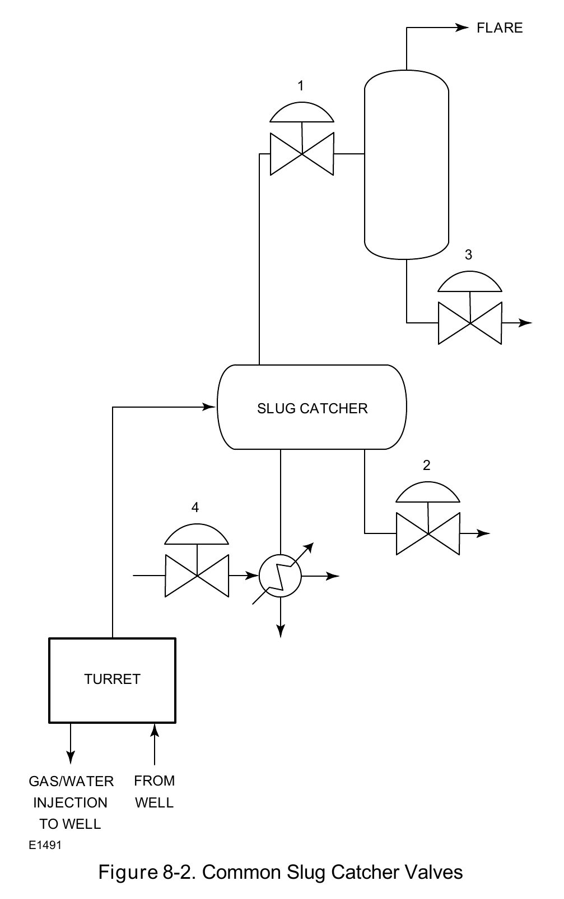

Facility Design Tradeoffs

The slug catcher — a two-phase-flow surge buffer common to both onshore and offshore gathering systems — is a real case where "the same component, two sites" makes the constraint tradeoff concrete rather than abstract.
Fisher Control Valve Sourcebook — Oil & Gas (© 2013 Fisher), Chapter 8 "Offshore Oil and Gas Production," Figure 8-2 (drawing number E1491, printed p. 8-5) — "Figure 8-2. Common Slug Catcher Valves." — used directly. Component Index: ogas-cmp-slug-catcher-valves.